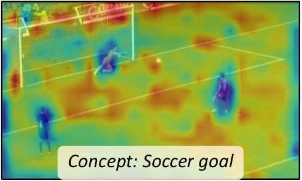
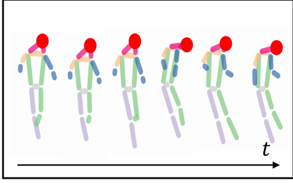
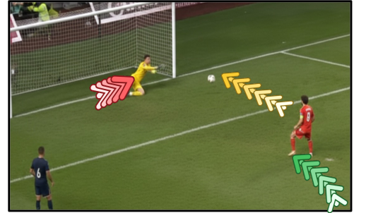
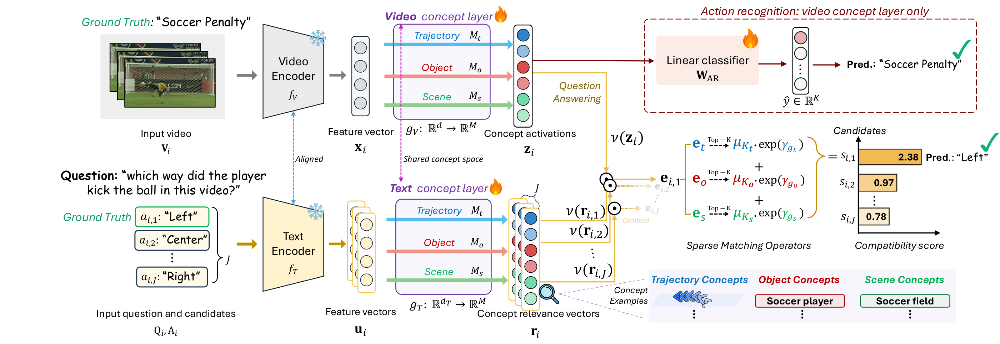
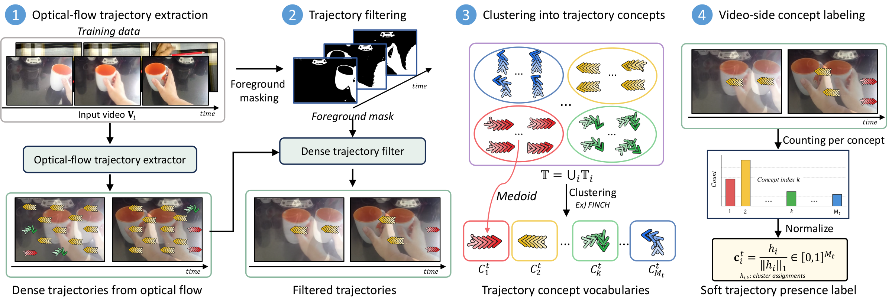
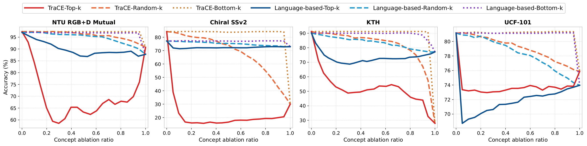
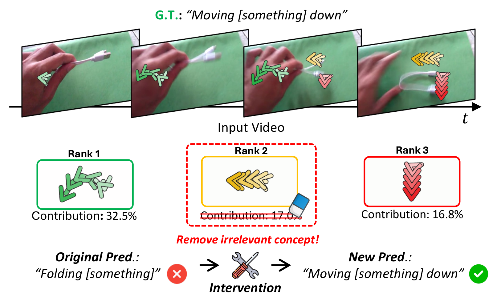
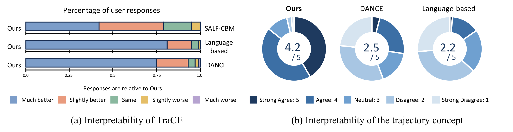

TraCE explains a video prediction with the trajectories that drove it. Pick an example: the overlaid chevrons are the top-ranked trajectory concepts, drawn on the regions of the clip that activate them.
Multi-agent interaction. The two highest-contributing concepts correspond to the pushing motion of one person and the displacement of the other. A pose-based vocabulary would see only one person's joints.
Object-centric dynamics. The full human body is never in frame, yet the top concepts follow the two objects being brought together. There is no joint to attach this motion to; the trajectory is the concept.
Concept matching explains a VQA answer. Rows are the top-3 video-side concepts, columns the answer candidates. PullUps scores highly on trajectory concepts that capture repeated vertical motion, so the prediction is explained by a structured match rather than a black-box score.
Demo video. For each input clip, the top contributing trajectory and object concepts are shown with their contributions, followed by the prediction.
Existing video explanations say that motion matters but not which motion. TraCE clusters optical-flow trajectories into Trajectory concepts and pairs them with Object and Scene concepts, so one typed interface explains both action recognition and VQA, at a cost of about one accuracy point.
Motion in a video comes from actors, manipulated objects, and interactions among entities, each with different semantics. For the same Soccer Penalty clip, here is what each family of explanation can and cannot tell you.

Region-centric heatmaps show where evidence is. The highlighted region mixes the kicker, the ball, and the static goal, so the user has to infer the motion themselves.

Pose-based concepts make one person's body motion explicit, but the vocabulary is defined over human joints. The ball and the other players have no concept to land on.

Every moving entity gets its own trajectory concept: goalkeeper dive, ball flight, kicker's run. Object and scene concepts cover the static context separately.
A frozen video encoder feeds a concept layer that outputs z = [zt; zo; zs]. Action recognition trains a sparse linear classifier on z; VQA projects each question–answer pair into the same concept space and scores answers by concept matching.

Trajectory concepts are clusters of optical-flow trajectories mined from training videos. No pose annotation, no language description of motion, so any moving entity can become a concept.
Trajectory concepts carry dynamic evidence; object and scene concepts, obtained with a Video-LLM and soft video–text pseudo-labels, carry static context. Vocabularies adapt per dataset; the interface does not.
Trajectory concepts have no names, so for VQA their text-side relevance is learned from answer supervision with an InfoNCE alignment instead of text–concept similarity. The same z serves both tasks.

Six benchmarks, two tasks, five seeds. Same frozen backbone within each task: VideoMAE for action recognition, InternVideo2 for VQA.
Average action-recognition trade-off against the non-interpretable baseline; best interpretable method on KTH and Chiral SSv2.
Average VQA change against the baseline. TraCE is the only concept-based method that supports VQA at all.
of user-study responses prefer TraCE explanations over DANCE and a language-based CBM; trajectory concepts rate 4.2 / 5 for coherence.
| Method | NTU RGB+D Mutual | Chiral SSv2 | UCF-101 | KTH | Avg. |
|---|---|---|---|---|---|
| Baseline w/o interpretability | 99.7±0.2 | 86.6±0.2 | 89.8±0.1 | 91.1±0.3 | 91.8 |
| LF-CBM w/ language concepts | 96.9±0.3 | 77.6±0.5 | 88.3±0.2 | 89.1±0.7 | 88.0 |
| DANCE | 97.1±0.3 | 81.7±0.3 | 89.0±0.2 | 91.3±0.4 | 89.8 |
| SALF-CBM | 99.7±0.0 | 80.4±0.4 | 87.5±0.2 | 87.9±0.4 | 88.9 |
| TraCE | 97.4±0.1 | 84.9±0.4 | 89.0±0.3 | 91.8±0.8 | 90.8 |
Top-1 accuracy (%), mean ± std over five seeds. Underline: best among interpretable methods. DANCE and SALF-CBM use pose-sequence and spatially-aware language concepts respectively; neither defines a VQA answer-scoring mechanism.
| Method | NTU RGB+D Mutual | Chiral SSv2 | UCF-101 | TOMATO | STAR | Avg. |
|---|---|---|---|---|---|---|
| Baseline w/o interpretability | 97.4±0.1 | 82.6±0.2 | 99.8±0.0 | 35.9±2.2 | 54.5±0.4 | 74.0 |
| TraCE | 97.1±0.3 | 82.6±0.6 | 99.7±0.1 | 37.0±1.7 | 55.4±1.2 | 74.4 |
Top-1 accuracy (%), mean ± std over five seeds. NTU, Chiral SSv2, and UCF-101 use multiple-choice VQA reformulations of the action labels; TOMATO and STAR are native VQA benchmarks. TraCE improves on both native benchmarks and on Chiral SSv2.
Removing the top-ranked trajectory concepts breaks predictions; removing random ones does not. Predictions also follow the motion when the video is reversed or rotated, and trajectory concepts transfer across object categories and domains.

Concept intervention curves. Accuracy as concepts are removed in Top-k, random, and Bottom-k order of contribution, for TraCE and a language-based CBM. The separation is weaker on UCF-101, where many classes are recognizable from static cues alone.

Explanations are actionable. The model misreads Moving [something] down as Folding [something] because of a leftward-motion concept. Deactivating that one concept corrects the prediction.
| Removed concepts | Flip rate |
|---|---|
| Top-10 by contribution | 39.0% |
| Random 10 | 2.2% |
| Chiral SSv2 | Acc. |
|---|---|
| Original | 82.9 |
| Temporal reverse | 79.2 |
| 90° rotation | 63.1 |
Each perturbation maps a direction-sensitive label to its counterpart; accuracy is measured against the transformed label.
| Trajectory-only | Disjoint obj. | SSv2→TOMATO |
|---|---|---|
| Baseline | 89.5 | 41.5 |
| TraCE | 94.4 | 43.1 |
Object categories disjoint between train and test (Something-Else), and zero-shot transfer to TOMATO.

Two studies on motion-focused subsets of NTU RGB+D Mutual and Chiral SSv2. In pairwise comparisons, over 93% of responses prefer TraCE explanations to DANCE and a language-based CBM, and about 78% prefer TraCE to SALF-CBM. Asked how well a concept matches the motion shared by its top-activating clips, participants rate trajectory concepts 4.2 / 5, versus 2.5 for pose-sequence and 2.2 for language-derived motion concepts.
@inproceedings{lee2026trace,
title = {{TraCE}: Trajectory-Aware Concepts for Explainable Video Understanding},
author = {Lee, Wooil and Hong, Junpyo and Lee, Jongseo and
Oikarinen, Tuomas and Weng, Tsui-Wei and Choi, Jinwoo},
booktitle = {Advances in Neural Information Processing Systems (NeurIPS)},
year = {2026}
}